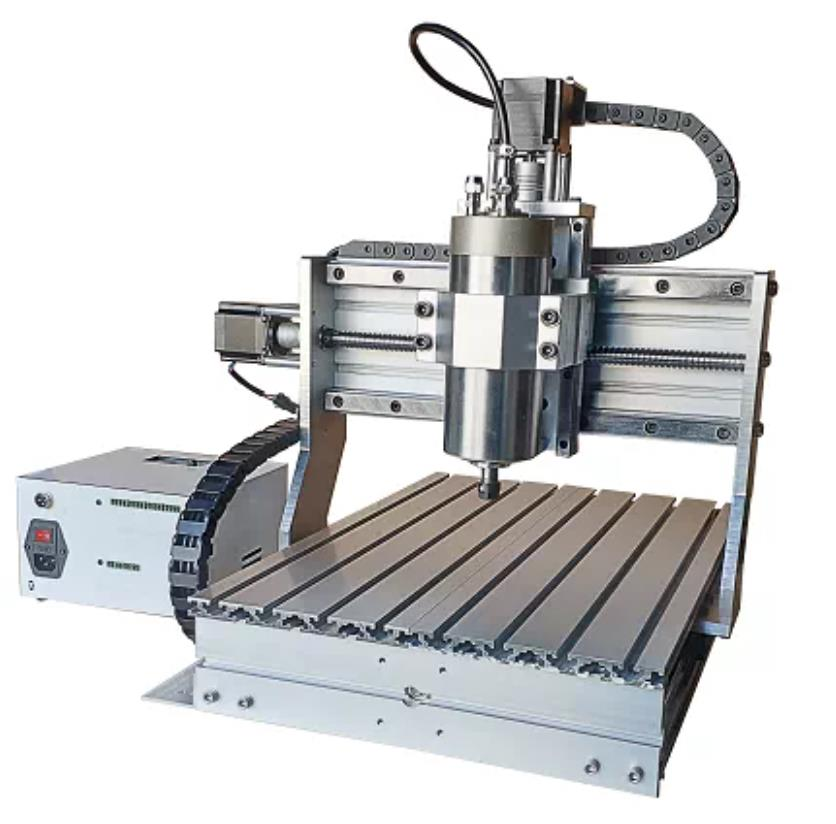

Фрезерно-гравировальный станок ЧПУ 3040 (1500 Вт)

Технические характеристики
- Рабочее поле (XYZ): 300 × 400 × 100 мм
- Мощность шпинделя: 1500 Вт (водяное охлаждение)
- Максимальные обороты: до 24 000 об/мин
- Охлаждение шпинделя: водяное
- Привод осей: ШВП (шарико-винтовая передача)
- Направляющие: профильные рельсы
- Управление: GRBL через ПК
- Обрабатываемые материалы: дерево, фанера, акрил, ПВХ, алюминий, цветные металлы, стекло, керамика
- Вес с упаковкой: ≈ 52 кг
Цена: от 85 000 ₽
В подарок: программа «Универсал — система ЧПУ» + комплект документов
Купить на Ozon
В подарок: программа «Универсал — система ЧПУ» + комплект документов
Важные рекомендации перед запуском
- Обязательно включите водяной насос перед запуском шпинделя!
- Частотник настроен на 400 (24 000 об/мин) с завода. Не меняйте настройки без необходимости.
- Перед началом задачи дождитесь стабилизации оборотов шпинделя (~5 секунд).
Полезные документы и файлы
- ⚠️ Важные предупреждения (Warm prompt)
- 🔧 Устранение неисправностей
- 📋 Инструкция по сборке и подключению
- 💻 Программа управления CNCV4.exe
- Драйвер шаговых двигателей
Программа «Универсал — система ЧПУ» — высылаем бесплатно по запросу после покупки.